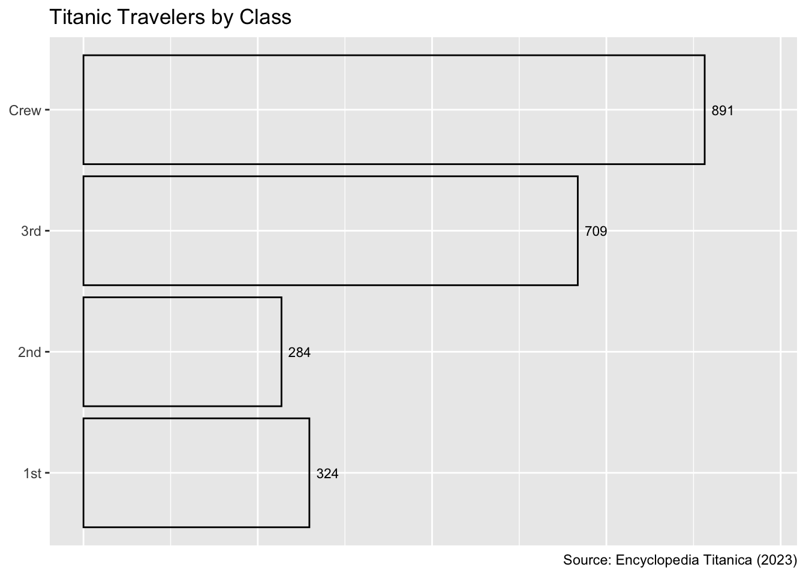

Code
library(tidyverse)
library(astsa)
library(palmerpenguins)
library(ggbeeswarm)
library(ggmosaic)library(tidyverse)
library(astsa)
library(palmerpenguins)
library(ggbeeswarm)
library(ggmosaic)Remove the penguins with missing bill length measurements from the penguins tibble to avoid ggplot2 warning messages in subsequent tasks.
data(penguins)
penguins <- drop_na(penguins, bill_length_mm)
# to ensure bill_length_mm column is clean of missing values
is.na(penguins$bill_length_mm) |> sum() > 0[1] FALSECreate a scatter plot displaying bill length on the x-axis and species on the y-axis. For this task and all subsequent ones, customize the axis labels and add a plot title. Additionally, include a plot caption attributing the source as “Gorman et al. (2014)”.
ggplot(penguins, aes(x=bill_length_mm, y=species)) +
geom_point() +
labs(
title="Scatter Plot of Species versus Bill Length",
x="Bill Length (mm)",
y="Species",
caption="Source: Gorman et al. (2014)"
)
Which feature of the data suggests that jittering the scatter plot might be beneficial? (Hint: Show that individuals cannot be uniquely identified by their bill length and species.)
Individuals cannot be uniquely identified by their bill length and species, as the following code shows:
anyDuplicated(select(penguins, species, bill_length_mm)) > 0[1] TRUENote: - Because of the presence of duplicates, the scatter plot at 2.2 exhibits overplotting; that is, some points occupy exactly the same positions in the plot.
Create a jitter plot displaying bill length on the x-axis and species on the y-axis. Reduce the opacity of the points and adjust the width and height arguments so that points are only jittered in the y-direction while ensuring that the points for different species are clearly separated.
ggplot(penguins, aes(x=bill_length_mm, y=species)) +
geom_jitter(alpha=0.5, width=0.0, height=0.3) +
labs(
title="Jitter Plot of Species versus Bill Length",
x="Bill Length (mm)",
y="Species",
caption="Source: Gorman et al. (2014)"
)
Use the geom_beeswarm() function from the ggbeeswarm package to produce a bee-swarm plot illustrating the distribution of bill lengths for each species. Display bill length on the x-axis and species on the y-axis.
ggplot(penguins, aes(x=bill_length_mm, y=species)) +
geom_beeswarm(size=0.8, cex=2) +
labs(
title="Beeswarm Plot of Species versus Bill Length",
x="Bill Length (mm)",
y="Species",
caption="Source: Gorman et al. (2014)"
)
State one advantage and one disadvantage of using a bee-swarm plot rather than a jitter plot for these data?
A bee-swarm plot spreads out the points in clusters of equal or nearly equal data values such that the points are close to each other but do not overlap.
Advantage: The bee-swarm layout enables a clearer identification of individual points compared to a jitter plot, where points can overlap due to their random placement.
Disadvantage: A potential drawback of bee-swarm plots is that points may need to be smaller or adjacent categories may need to be farther apart to avoid overlapping.
Combine a violin plot and a box plot in one graph. The plot should display bill length on the x-axis and species on the y-axis.
ggplot(penguins, aes(x=bill_length_mm, y=species)) +
geom_boxplot() +
geom_violin(fill="lightblue", alpha=0.2) +
labs(
title="Violin Plot with Box Plot of Species versus Bill Length",
x="Bill Length (mm)",
y="Species",
caption="Source: Gorman et al. (2014)"
)
Display the bill-length distribution of each species as a frequency polygon, using a bin width of your choice. Combine all three frequency polygons into one coordinate system using a color aesthetic. Place a rug plot below the x-axis to show the distribution of individual data points with corresponding colors.
ggplot(penguins, aes(x=bill_length_mm, color=species)) +
geom_freqpoly(binwidth = 1) +
geom_rug( alpha=0.5 ) +
labs(
title="Frequency Polygons with Rug Plot of Bill Length",
x="Bill Length (mm)",
y="Count",
color="Species",
caption="Source: Gorman et al. (2014)"
)
Produce a faceted plot that displays the bill-length distribution of each species in a separate facet, using the same bin width as in the previous task. Add a rug plot below each frequency polygon.
ggplot(penguins, aes(x=bill_length_mm, color=species)) +
geom_freqpoly(binwidth = 1) +
geom_rug( alpha = 0.5 ) +
facet_wrap(~species, ncol=1) +
labs(
title="Faceted Frequency Polygons with Rug Plots of Bill Length",
x="Bill Length (mm)",
y="Count",
caption="Source: Gorman et al. (2014)"
)
State one strength and one weakness of the faceted plot in the previous task compared to the earlier non-faceted frequency polygons with rug plot.
Advantage:
Faceting clearly separates the distribution of each category, eliminating the need for color coding. It also reduces the degree of overplotting in the rug plots compared to the non-faceted rug plot
Disadvantage:
Faceting can lead to a loss of the overall context of the data, as the distance between different frequency polygons in the plot increases. Thus, the reader needs to shift the view to draw comparisons.
All plots above suggest that the bill length of the Adélie penguin is shorter than that of the gentoo and chinstrap penguins. Let us support this observation quantitatively: 1. Calculate the mean bill length for each species. 2. Perform a pairwise t-test using R. Report the p-value and interpret the result using a significance level of a = 0.05.
penguins_new <-
penguins |>
group_by(species) |>
mutate(mean = mean(bill_length_mm, na.rm = TRUE)) |>
distinct(species, mean)
# show mean bill length of each species
penguins_new# A tibble: 3 × 2
# Groups: species [3]
species mean
<fct> <dbl>
1 Adelie 38.8
2 Gentoo 47.5
3 Chinstrap 48.8Note: As seen in the tibble above, the smallest mean bill length is Adelie’s penguin.
pairwise.t.test(penguins$bill_length_mm, penguins$species)
Pairwise comparisons using t tests with pooled SD
data: penguins$bill_length_mm and penguins$species
Adelie Chinstrap
Chinstrap <2e-16 -
Gentoo <2e-16 0.0032
P value adjustment method: holm All ùëù-values are below the usual significance level of 0.05, indicating that the bill lengths of the three species are significantly different from each other. Specifically, AdeÃÅlie penguins have the shortest bills, while Chinstrap penguins have the longest bills.
titanic <- read_csv("titanic.csv")Create a bar chart displaying the number of travelers by class (1st, 2nd, 3rd, and crew). Include a plot title and a caption attributing the source as “Encyclopedia Titanica (2023).” Aim for a solution similar to Figure 3.1.
Hint: You may find it easier to aggregate the number of passenger using count() before calling ggplot().
titanic_new <-
titanic |>
group_by(class) |>
summarize(count = n())
ggplot(titanic_new, aes(x=count, y=class, label=count)) +
geom_col(fill=NA, color="black") +
geom_text(hjust=0, size=3, nudge_x=10) +
labs(
title="Titanic Travelers by Class",
x=NULL,
y=NULL,
caption="Source: Encyclopedia Titanica (2023)"
) +
xlim(0, 975) +
guides(x="none")
Use a dodged bar chart to visualize the dependence of the survival rate on the class in which a person traveled. Aim for a solution similar to Figure 3.2.
titanic_new <-
titanic |>
group_by(class, survived) |>
summarize(count = n())
ggplot(titanic_new, aes(x=count, y=class, fill=survived, color=survived, label=count)) +
geom_col(position="dodge") +
geom_text(position=position_dodge(width=0.9), vjust=0.5, hjust=-0.03) +
labs(
title="Titanic Travelers by Class and Survival",
x=NULL,
y=NULL,
caption="Source: Encyclopedia Titanica (2023)"
) +
xlim(0, 750) +
guides(x="none")
When working with two categorical variables, such as class and survival, mosaic plots provide an alternative to segmented bar charts. Use the geom_mosaic() function from the ggmosaic package to create a mosaic plot of the data in titanic. Aim for a solution similar to Figure 3.3.
This task requires some hacking skills. Look at the documentation for geom_mosaic(). A hint for printing the number of travelers in each category at the center of the corresponding mosaic tile can be found on Stack Overflow.
p <- # Save p as a workaround to determine midpoints in each rectangle
ggplot(titanic) +
geom_mosaic(aes(product(class), fill = survived))
p + geom_text(
data = group_by(ggplot_build(p)$data[[1]], x__class),
aes(x = (xmin + xmax) / 2, y = (ymin + ymax) / 2, label = .wt)
) +
labs(
x = "Class",
y = "Survived",
title = "Titanic Travelers by Class and Survival",
caption = "Source: Encyclopedia Titanica (2023)"
) +
guides(fill = "none")State one advantage and one disadvantage of using the mosaic plot in Figure 3.3 instead of the dodged bar chart in Figure 3.2 for the Titanic data.
Advantage:
Unlike in the dodged bar chart, where the lengths of the bars represent absolute numbers, each class occupies the full height of the mosaic plot. Therefore, the mosaic plot provides a clearer visual representation of the proportions of survivors and victims across classes.
Disadvantage:
In the dodged bar plot, it is easier to compare the absolute number of survivors across classes because all of the bars are equally thick; hence, the areas are directly proportional to the lengths. The same argument applies, of course, also to the comparison of the absolute number of victims across classes.